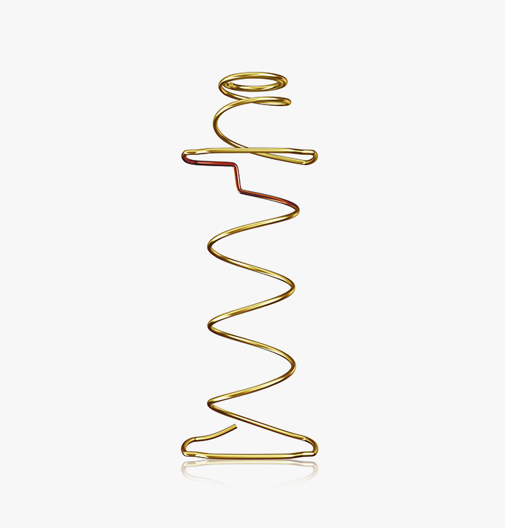

스프링
좋은 침대의 첫 번째 기준은 바로 스프링! 침대의 기술은 스프링 기술로 발전했습니다.
150년 스프링의 역사를 바꾼 에이스침대만의 혁신적인 스프링으로 또 다시 세계인의 잠자리를 혁신합니다.
150년 침대의 스프링 역사를 바꾸다
NEXT 침대과학으로 탄생한 세계특허 Z Spring
-

5세대Hybrid Z Spring
-

1세대본넬 타입
-

2세대포켓 타입
-

3세대엔드리스 타입
-

4세대오픈 타입
잠을 방해하는 모든 요소들이 사라지는
5 FREE SYSTEM
-

쏠림FREE
탄력의 대칭을 위해 2개의 스프링을 서로 마주보게 판조립하는 신기술인 FTF공법을 적용하여 어떤 방향에서 힘을 받아도 쏠리지 않습니다
-

흔들림FREE
스프링판 위로 하나하나 독립되어 돌출된 Fit Zone은 따로따로 움직이기 떄문에 진동을 차단해 주어 옆 사람이 뒤척여도 흔들리지 않습니다
-

꺼짐FREE
위에서 한번, 두번 받쳐주는 더블 쿠션 시스템이라 오래 사용해도 꺼지지 않고 처음 같은 탄력을 제공합니다
-

소음FREE
세계 15개국 발명특허를 획득한 Z 센서가 스프링간의 마찰로 인한 소음을 방지해주어 보다 충만한 휴식을 드립니다
-

빈틈FREE
피아노 건반처럼 따로따로 독립된 Fit Zone이 인체 곡선을 따라 맞춰주어 어떤 체형이라도 빈틈없이 지지해줍니다.
인체 곡선을 따라 부드럽게 맞춰주는
1SPRING 2PLAY
Hybrid Z Spring은 인체곡선과
하중분포에 따라 위에서 한번 부드럽게 맞춰주고,
밑에서 또 한번 단단하게 받쳐주어 빈틈없이 완벽한
S라인을 유지시켜 줍니다

1Play인체 곡선을 따라 부드럽게 맞춰준다
2중 구조로 이루어진 Hybrid Z Spring은 상부의 독립된 스프링이 마치 피아노 건반처럼
몸의 라인을 따라 부드럽고 빈틈없이 맞춰주어 가장 편안한 수면 자세를 만들어 드립니다
2Play숙면을 위한 단단한 지지력까지!
반발력이 약한 독립형 스프링이나 폼 매트리스와는 달리 수면시간 동안 몸의 뒤척임을 무리없이
도와주고 인체의 하중을 단단하게 받쳐주어 숙면에 도움을 줍니다
위에서 한번
FIT ZONE아래에서 또 한번
SUPPORT ZONE


건강한 수면 생활을 누릴 수 있는
BRASS COIL
황동 도금한 경강선을 이용하여 미생물 번식 억제,
살균, 녹 발생 억제 효과가 있어 침대 속 까지
건강한 수면 생활을 누릴 수 있습니다.
(일부 매트리스에 적용 됩니다.)
S라인을 유지시켜주는
Hybrid Z Spring
-

Hybrid Z Spring
위에서 맞춰주고 아래서 또 한번 받쳐주어 어깨부터
엉덩이, 발목까지 일직선을 이루어 서 있을 때의
S라인 그대로 누웠을 때도 유지시켜줍니다. -

독립형 스프링
스프링 탄력이 약해 제대로 받쳐주지 못하기 때문에
하중이 많이 나가는 엉덩이 부분이 처져, 서 있을 때의
S라인이 누웠을 때에는 유지되지 못합니다. -

메모리 폼
메모리 폼의 탄력이 약해 제대로 받쳐주지 못하기
때문에 하중이 많이 나가는 엉덩이 부분이 처져,
서 있을 때의 S라인이 누웠을 때에는 유지되지 못합니다.
150년 스프링 역사를 바꾼
Hybrid Z Spring 특허
- 미국 US7.677.541B2
- 유럽연합 EP 1834547 (6개국)
- 캐나다 2.550.303
- 일본 제4264489호
- 한국 제10-717543호
- 중국 ZL2006101080827
- 멕시코 266524
- 인도네시아 ID P0031675
- 브라질 PI0602620-6
SPRING
사람은 수면 중 30회 가량 몸을 뒤척이면서 약 200cc 정도의 땀을 흘릴 만큼의 많은 에너지를 소모합니다.
매트리스 스프링의 탄력은 수면 중 에너지 소모를 적게 하면서 깊은 잠을 이루게 하는 결정적 요소입니다.
- Hybrid Z Spring
- Hybrid Spring
- Plus Power Spring
- Magic Power Spring
- Super Power Spring
- Hybrid S Spring

-
 150년 침대 스프링의 역사를 바꾸다
150년 침대 스프링의 역사를 바꾸다
NEXT 침대과학으로 탄생한 세계특허 Z스프링Hybrid Z Spring
세계특허 Z Sensor (15개국 특허획득)
부드럽게 맞춰주고 또 한 번 단단하게 받쳐주는 1Spring 2Play 기능에 잠을 방해하는 꺼짐, 소음, 빈틈, 흔들림, 쏠림을 방지하는 5 Free System으로 차원이 다른 편안함을 느껴보세요!-

5 FREE 시스템
꺼짐, 소음, 빈틈, 흔들림, 쏠림 지금까지 숙면을 방해해왔던 모든 것으로 부터 자유롭게
-

1 SPRING 2 PLAY
인체곡선과 하중분포에 따라 위에서 한번 부드럽게 맞춰주고 밑에서 또 한 번 단단하게 받쳐주어 빈틈없이 완벽한 S라인을 유지시켜 줍니다.
-

브레스 코일
황동 도금한 경강선을 이용하여 미생물 번식 억제, 살균, 녹발생 억제 효과로 침대 속까지 건강한 수면 생활을 누릴 수 있습니다. (일부 매트리스에 적용)
-
-
 스프링에 대한 새로운 혁신
스프링에 대한 새로운 혁신Hybrid Spring
부드럽게 맞춰주는 독립형 스프링과 단단하게 받쳐주는 연결형 스프링이 하나로! 하이브리드 스프링은 어떤 체형도 맞춰주고 받쳐주어 서있을 때의 S라인을 누웠을 때도 그대로 유지시켜줍니다.
-

1 SPRING 2 PLAY
인체곡선과 하중분포에 따라 위에서 한번 부드럽게 맞춰주고 밑에서 또 한 번 단단하게 받쳐주어 빈틈없이 완벽한 S라인을 유지시켜 줍니다.
-

꺼짐, 소음, 빈틈, 흔들림으로부터 FREE!
오래 사용해도 늘 처음 같은 탄력을 제공하며 서로 부딪혀서 발생하는 소음을 방지해줍니다. 또한 독립된 Fit Zone이 체형을 빈틈없이 지지해주고 진동을 차단해 흔들리지 않습니다.
-

투웨이 쿠션 시스템
하이브리드 스프링 자체만으로 상하면의 서로 다른 쿠션감을 제공하며, 체형에 맞는 매트리스 쿠션감을 선택하여 이용하실 수 있습니다.
-
-
 최적 숙면 유도를 위한 신개념의 오픈형 스프링
최적 숙면 유도를 위한 신개념의 오픈형 스프링Plus Power Spring
플러스파워 스프링은 수면 시 발생하는 인체의 변화에 따라 스프링이 민감하게 반응하여 항상 최적의 수면조건을 제공해주는 최적 숙면 유도를 위한 신개념 오픈형 스프링입니다.
-

5½ 회전의 오픈형 구조
회전수 5 ½회전의 수갑을 하지 않은 오픈형 구조로 수갑을 하지 않아 강선의 절단과 변형이 없습니다. 스프링 중간경이 커서 장기간 사용해도 줄음률이 최소화됩니다.
-

최적 숙면 유도 시스템
최소 형상, 최소 소음의 오픈형 스프링으로 인체의 하중을 단위 면적 당 가장 많은 스프링으로 분산처리하며 수면 시 인체의 변화에 민감하게 반응하여 최적의 숙면을 유도합니다.
-

부드러우면서도 강한 탄력성
조립부위가 직선으로 되어 있어 헤리컬코일 내경이 최소화 되어있습니다. 스프링 연결이 견고하여 안전성이 탁월하며, 스프링 판 조립 시 부드러우면서도 강한 탄력성을 제공합니다.
-
-
 기존 엔드리스의 단점을 개선한 신개념 엔드리스 스프링
기존 엔드리스의 단점을 개선한 신개념 엔드리스 스프링Magic Power Spring
매직 파워 스프링은 인체곡선을 닮은 S자 구조와 신기술인 네오 트러스트 시스템을 적용하여 하중분산 효과가 탁월할 뿐만 아니라 기존 엔드리스의 단점인 쏠림과 변형, 소음을 개선한 신개념 엔드리스 스프링입니다.
-

신개념 엔드리스 스프링
인체곡선을 닮은 S자 구조를 채택하였으며, 선경 2.2mm 경강선을 사용하여 강한 탄력성을 제공합니다. 큰 중간경은 변형 및 줄음율을 혁신적으로 개선하는 역할을 합니다.
-

네오 트러스트 시스템
대부분의 스프링은 직선으로 배열되어 탄력이 불규칙하지만, 스프링을 지그재그로 배열하는 신기술을 적용해 스프링의 쏠림과 변형을 방지해 고른 탄력을 제공합니다.
-

소음 없는 수직반응
스프링에 압박을 가했을 때 수직으로 움직이는 구조로 스프링 조립부위가 최소로 되어 소음 발생을 최소화 하며 하중분산 효과는 물론 탄력과 내구성이 탁월합니다.
-
-
 고탄력 엔드리스 스프링
고탄력 엔드리스 스프링Super Power Spring
에이스 침대공학연구소와 미국 L&P사가 공동 개발한 스프링으로 엔드리스 스프링 중 단위면적당 가장 많은 스프링이 내장되었습니다. 장기간 사용해도 줄음이 없고, 부드러운 탄력성을 제공합니다.
-
 THE PREMIUM SOFT MATTRESS
THE PREMIUM SOFT MATTRESS
부드러운 쿠션감, 프리미엄의 기준이 되다Hybrid S Spring
부드럽게 맞춰주고 편안하게 받쳐주는 세계특허 하이브리드 S 스프링이 인체곡선에 따라 부드럽게 반응하여 더욱 안락하고 완벽한 수면을 약속합니다.